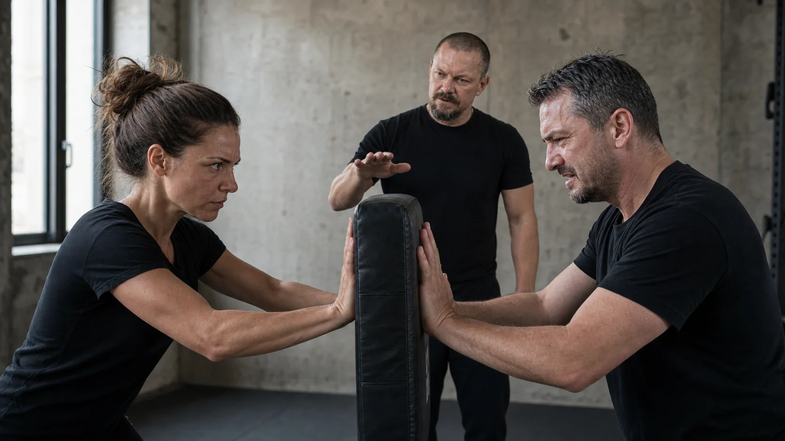
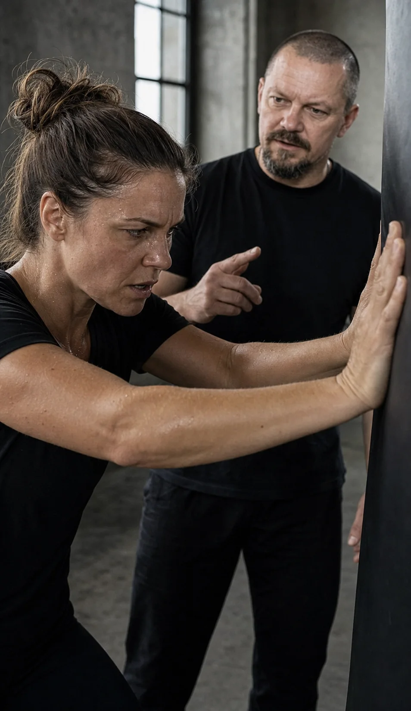

Po rozhovoru mě napadne přesná odpověď.
V situaci jsem ji ale nedokázal vybavit.
Veřejný psychofyzický trénink pro jednotlivce · Praha
Ztuhnutí, ústup, prudká reakce, ztráta slov nebo impulzivní jednání mají různé podoby. Spojuje je jedno: pod tlakem tělo spustí reakci dřív, než stihnete jednat tak, jak skutečně chcete.
Psychofyzický trénink Resilium vás naučí vlastní reakci včas rozpoznat, regulovat a zvolit, jak chcete jednat.
Poznáváte se?
Chtěli jste se ozvat, ale ztuhli jste. Chtěli jste zůstat věcní, ale začali jste se bránit. Chtěli jste ustoupit od konfliktu, ale reagovali jste prudce. Různé situace, stejný pocit: vlastní reakce vás předběhla.
Vyberte situace, které znáte ze svého života. Během několika vteřin uvidíte, zda trénink odpovídá tomu, co chcete ve svých reakcích změnit.
Po rozhovoru mě napadne přesná odpověď.
V situaci jsem ji ale nedokázal vybavit.
Při kritice se okamžitě bráním.
Vysvětluji, protiútočím nebo přestanu poslouchat.
V konfliktu mlčím nebo ustoupím.
A potom mě ještě dlouho mrzí, že jsem se neozval.
Při prezentaci zapomenu, co dobře znám.
Ztratím nit, zrychlím nebo se příliš držím scénáře.
Reaguji prudčeji, než chci.
Uvědomím si to až poté, co jsem něco řekl nebo udělal.
Bojím se vlastní reakce.
Nejen situace samotné, ale toho, že znovu zareaguji stejně.
Co se v rozhodující chvíli děje
V klidu máte jasno. Pod akutním tlakem nebo zátěží se však automatická reakce těla může spustit dřív, než vědomě zvolíte další krok. Proto můžete ztuhnout, ustoupit, začít se bránit, jednat impulzivně nebo ztratit slova.
Model zjednodušuje složitý biologický a psychologický proces. Neslouží k diagnostice. Pomůže vám pochopit, ve které části reakce můžete začít jednat jinak.
Co vás automatická reakce stojí
Neřeknete důležitou věc. Ustoupíte ze své hranice. Prudkou reakcí posunete vztah jinam, než jste chtěli. Situaci si přehráváte ještě večer — a příště do ní vstupujete s menší jistotou.
Na pohovoru, při vyjednávání nebo prezentaci neukážete schopnosti, které skutečně máte.
Obrannost, ústup nebo prudká reakce posunou rozhovor jinam, než jste chtěli.
Situaci si znovu procházíte a vytváříte lepší odpovědi, které už nelze použít.
Odkládáte nepříjemný rozhovor, neozvete se nebo odmítnete příležitost, která vás vystaví tlaku.
Začnete si říkat, že „takový prostě jste“, přestože mimo náročnou situaci fungujete úplně jinak.
Příště nevstupujete do situace jen s obavou z výsledku, ale i z vlastní reakce.
V klidu můžete být rozumní, pohotoví a komunikačně silní — a přesto v náročné chvíli ztratit slova, stáhnout se nebo jednat impulzivně. Resilium nepracuje s nálepkou „jsem takový“. Pracuje s konkrétní reakcí, kterou můžete rozpoznat, ovlivnit a trénovat.
Psychofyzický trénink Resilium
Porozumění vám dává mapu. Psychofyzický trénink k ní přidává zkušenost, kterou dokážete použít při skutečné aktivaci těla a mysli.
Resilium propojuje fyzickou reakci, pozornost, rozhodování, komunikaci a konkrétní jednání. V bezpečně vedených situacích nejprve poznáte vlastní automatickou reakci, potom se naučíte zachytit její první signály, regulovat ji a přerušit její další rozvoj dříve, než začne řídit vaše jednání.
Řízená zátěž vytvoří podmínky, ve kterých svou reakci skutečně poznáte — ne jen popíšete.
U někoho se změní dech, u jiného hlas, pozornost, tempo řeči, pohyb nebo způsob rozhodování.
Pracujete s tělesnou aktivací a pozorností tak, abyste další rozvoj reakce zastavili včas.
Trénujete přístup ke slovům, úsudku, zkušenostem a volbě dalšího jednání.
Nová zkušenost se upevňuje v několika situacích, nikoli jedním úspěšným pokusem.
Na závěr připravíte konkrétní postup pro situace, které řešíte v práci nebo osobně.

Co si odnesete
Naučíte se zachytit první signály, regulovat rozvoj reakce a získat více prostoru pro odpověď, rozhodnutí, hranici nebo bezpečný odchod.
Budete vědět, jaké první signály se objevují právě u vás.
Krátký postup, který lze začít používat přímo v náročné situaci.
Nejen teorii, ale vlastní prožitek změny mezi prvním a dalším pokusem.
Více prostoru pro odpověď, rozhodnutí, hranici, odchod nebo vědomé mlčení.
Přenos do prezentace, kritiky, konfliktu, vyjednávání nebo jiného okamžiku, na kterém vám záleží.
Vědecký základ
Resilium vychází z výzkumu akutního stresu, pracovní paměti, kognitivní flexibility, rozhodování a nácviku pod zátěží. Nepoužíváme vysvětlení typu „vypnutí mozku“ ani neslibujeme absolutní kontrolu.
Akutní zátěž může zhoršovat pracovní paměť a kognitivní flexibilitu. Dopad na rozhodování závisí na typu úkolu a kontextu.
Samotné pochopení nezaručuje použití pod tlakem. Výzkum obecně podporuje princip postupné přípravy na výkon ve stresové expozici.
Rozlišujeme sílu důkazů a používáme formulace „může“, „často“ a „záleží na kontextu“, kdykoli výzkum nepodporuje univerzální závěr.
Výzkum podporuje popis výchozích mechanismů akutního stresu a obecný princip postupného nácviku pod kontrolovanou zátěží. Nejde však o přímé klinické ověření programu Resilium. Resilium je vlastní psychofyzický tréninkový rámec; není zdravotní péčí, terapií ani klinicky validovaným léčebným protokolem.Vybrané odborné zdroje: Shields, Sazma & Yonelinas (2016), Starcke & Brand (2012) a Saunders et al. (1996).
Pro koho je trénink
Průběh tréninku
Krátká vysvětlení se střídají s praktickými cvičeními, řízenými scénáři, zpětnou vazbou, opakováním a přestávkou.
Tělo, pozornost, řeč, hlas, rozhodování a chování.
Rozdíl mezi schopností v klidu a jejím použitím v rozhodující chvíli.
Bezpečné rozpoznání automatické reakce bez hodnocení a nálepkování.
Praktická práce s aktivací těla, pozorností a dalším krokem.
Komunikace, hranice, kritika, konflikt, nejistota a rozhodování.
Osobní plán, který navazuje na situaci, již chcete zvládat jinak.
Veřejný trénink pro jednotlivce · Praha
Praktický program, ve kterém poznáte vlastní reakci, nacvičíte regulaci a přenesete nový postup do konkrétních situací.

Pauza na oběd 12:00–13:00. Maximálně 12 účastníků. Cena při přihlášení do 20. 10. 2026 je 3 900 Kč, poté 4 600 Kč.
Na samostatné stránce termínu najdete program dne, přesnou mapu i přihlášku.
Prohlédnout termín a přihláškuVeřejný trénink pro jednotlivce · přihláška
Přihlašujete se na trénink v Praze dne 21. 11. 2026 od 9:00 do 16:00. Vyplníte kontaktní a fakturační údaje. Na e-mail vám pošleme potvrzení, fakturu a organizační informace. Po úhradě je vaše místo závazně potvrzeno.
Hledáte trénink pro firmu nebo celý tým?
Firemní program připravujeme podle konkrétních situací organizace. Přejít k firemní poptávce →
Nejčastější otázky
Bez přehnaných slibů: pro koho trénink je, jak probíhá a co přesně znamená jeho odborný základ.
Trénink je pro vás, pokud mimo náročnou situaci víte, jak chcete jednat, ale při konfliktu, kritice, prezentaci nebo nejistotě reagujete jinak: ztrácíte slova, stáhnete se, bráníte se nebo jednáte prudce. Nejde o diagnostický ani léčebný program.
Pracujeme s postupně dávkovanou zátěží v bezpečném prostředí a s předem srozumitelnými hranicemi. Smyslem je rozpoznat vlastní reakci a nacvičit jiný postup. Konkrétní cvičení se přizpůsobují možnostem skupiny.
Výzkum podporuje výchozí mechanismy, se kterými Resilium pracuje: akutní stres může zhoršovat pracovní paměť a kognitivní flexibilitu a ovlivňovat rozhodování. Dopad není u všech lidí ani úkolů stejný. Výzkum stresového nácviku podporuje princip postupné přípravy na výkon pod zátěží; není však přímým ověřením programu Resilium. Resilium je vlastní tréninkový rámec a neprezentujeme jej jako klinicky validovanou léčebnou metodu.Vybrané odborné zdroje: Shields, Sazma & Yonelinas (2016), Starcke & Brand (2012) a Saunders et al. (1996).
Ne. Psychofyzický trénink Resilium nenahrazuje psychoterapii, psychologickou diagnostiku ani zdravotní péči. Zaměřuje se na praktický nácvik konkrétního jednání v budoucích náročných situacích.
Ne. Můžete pracovat s typem situace bez zveřejňování citlivého osobního obsahu. Sdílení soukromých témat není podmínkou účasti.
Vyplníte formulář. Na e-mail obdržíte potvrzení rezervace, fakturu a platební údaje. Místo je závazně potvrzeno po připsání platby.
Ano. Ve formuláři zvolíte fakturaci na firmu a doplníte potřebné údaje. Stále jde o rezervaci jednoho místa na veřejném tréninku pro jednotlivce; program pro celý tým poptáte na stránce pro firmy.
Praha · 21. 11. 2026
Praktický psychofyzický trénink od 9:00 do 16:00. Maximálně 12 lidí. Konkrétní postup pro situace, ve kterých chcete zůstat sami sebou.
Prohlédnout veřejný trénink